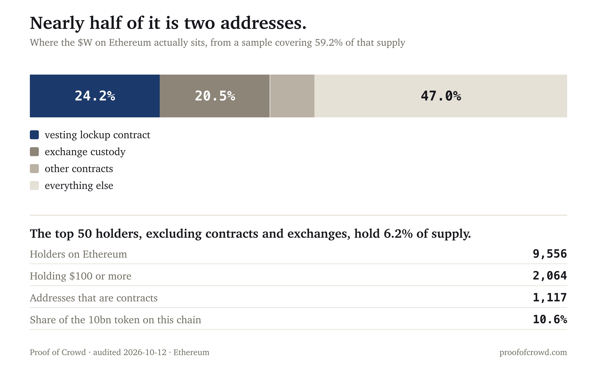

| Metric | $W | Read |
|---|---|---|
| Creator concentration (top 3) | 68.7% | 56th percentile, at the peer median |
| Cross-token accounts | 4.2% | 22nd percentile, below the 23.0% median |
| Repeated wording across accounts | 3.7% | 80th percentile, small in absolute terms |
| Spam vs the token's own norm | 0.356 vs 0.333 (1.07x) | flat |
| Holders on Ethereum | 9,556 | cross-checked at 9,555, 0% apart |
| Holders with $100 or more | 2,064 | 21.6% of the headline count |
| Largest holder | 24.2% | a vesting lockup contract |
| Second largest | 20.5% | an exchange address |
| Share of the token on this chain | 10.6% | most of it is elsewhere |
| Manufactured score | 25/100 | organic (under 30) |
Score computed with the published formula in the open hype-detector project: spam lift 1.3, spam share 7.1, concentration 16.8, sentiment uniformity 0.0. Concentration is ranked against same-size peers, so a token at its peer median is not charged for being small.
Measured over 107 posts on the verified topic wormhole. The bare w topic was checked and rejected before any figure was computed: 0% of its posts are about a token, because a single letter collides with everything.
Top-three creator concentration is 68.7%, the 56th percentile of 41 same-size peers against a median of 64.4%. That is the middle of the pack, and the loudest accounts are ordinary crypto commentators rather than one dominant voice, the largest holding 18.6% of interactions.
Attention rose with the price. People posting went from 112 a day to 207, and interactions from 74,871 a day to 199,667.
4.2% of interactions come from accounts that also post about three or more other tokens. Against same-size peers that is the 22nd percentile, below the 23.0% median. The accounts carrying this conversation are less promiscuous than the typical token of this size, not more.
On comparing against Bitcoin. Against a live Bitcoin control pulled the same day, $W runs 14.2x the control's spread-account share. That is the wrong comparison and it is reported here so nobody mistakes it for the finding. Bitcoin has an enormous diffuse audience, so its spread share is near zero by construction, and ranking a $165M token against it charges the token for being small. The size-bias measurement is published. The band percentile is the figure that means something.
3.7% of posts are near-duplicates across more than one account, the 80th percentile of its band against a median of 0.0%. Elevated in rank and small in size. A token in this band normally carries none at all, so the rank overstates how much is actually present.
The Ethereum ERC-20 total supply is 1,062,939,501 W, which is 10.6% of the 10,000,000,000 global total and 16.1% of circulating. Most of Wormhole lives elsewhere, principally Solana. Everything in this section describes the Ethereum slice, and nothing in it should be read as describing the token as a whole.

From a top-50 sample covering 59.2% of that supply, nearly half sits in two addresses: 24.2% in a VotingTokenLockupPlans vesting contract and 20.5% at an address classified as an exchange. Across the sample, 32.5% is in contracts and 20.5% at exchanges, and the top 50 excluding both holds 6.2% of supply.
Neither of those is a finding about honesty. A vesting contract is what a locked allocation is supposed to look like, and exchange custody is where tradable supply lives. What it does mean is that the float available to ordinary holders is considerably smaller than the contract's headline supply suggests.
Holder distribution, enumerated across all 9,557 addresses:
| Position size | Addresses | Share |
|---|---|---|
| $10k or more | 93 | 1.1% |
| $1k to $10k | 388 | 4.6% |
| $100 to $1k | 1,583 | 18.8% |
| $10 to $100 | 2,159 | 25.6% |
| $1 to $10 | 1,493 | 17.7% |
| under $1 | 2,719 | 32.2% |
2,064 addresses hold $100 or more, 21.6% of the 9,556 headline count. A third hold under a dollar. Dust is normal for any ERC-20 and is not evidence of anything by itself.
1,117 of the 9,557 addresses are contracts, 11.7% of what an explorer counts as a holder. Counting those inflates the number a project can quote.
It does not identify who is behind any account, and it does not establish motive. It takes no view on the token's technology, its bridge, or its team.
Two gaps, stated rather than glossed. Retention is not included. The first-holder scan over this contract's full history reached 0.3% before the upstream data service stopped answering, and is resuming; it will be added as a dated appendix rather than folded in silently. On comparable audits that figure, the share of addresses that ever held and have since left, has been the most informative onchain number in the report. The Solana side is not audited, because the reconstruction tooling covers EVM chains only, so 89.4% of the token's supply sits outside what was measured here.
Social data from LunarCrush over the period ending 2026-10-12, on a topic verified as genuinely about the token by reading its highest-interaction posts before any figure was computed. Peer ranks are against 41 same-size tokens drawn from a population of 130 whose topics were each verified the same way.
Chain data read from Ethereum via Blockscout, with the holder count cross-checked against a second source: 9,554 against 9,555, a 0% difference. Market data from LunarCrush and CoinGecko.
This audit was not commissioned, and no one associated with the project was contacted before publication.
A note on sample selection. The other published specimens scored 97/100 and came back manufactured, 23/100 and came back organic, and 25/100 with one published claim that did not hold. All four are shown because a method that only ever finds problems is not measuring anything.